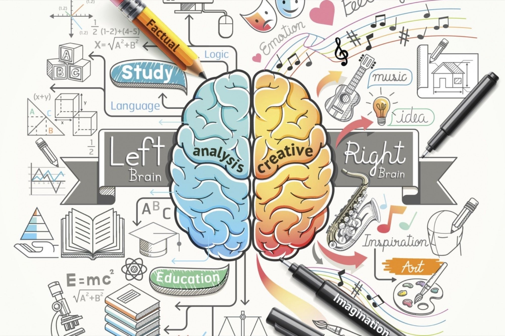

Studievoortgang
eigenlijk gaat alles wel goed, ik vind dat ik het nog wat beter kan maar ik sta overal gewoon een voldoende voor.
Ik ben blij in de lessen en maak veel plezier. ik kan daarnaast ook nog serieus werken. ik vind burgerschap wel een wat minder vak maar het gaat wel oke.en met hogere cijfers kan
ik kan hierdoor makkelijker instromen op een HBO of makkelijker werk vinden.
Skills vakgebied
Ik heb me al sterk ontwikkeld in JavaScript. maar ik heb nog wat meer moeite met PHP.
Ik wis nog niks toen ik op deze opleiding ben gekomen en ik vind dat ik me zeer goed aan het ontwikkelen ben.
JavaScript is het onderdeel waar ik het best in ben maar ik ben ook beter geworden met mijn PHP al is dat nog niet heel goed.
de racegame is iets waar ik trots op ben omdat ik daar creatief ben geweest en iets heb gedaan wat ik nog nooit had gedaan.
Met alle dingen die ik heb geleerd kan ik deze studie makkelijker afmaken en voor welke baan die ik hierna wil gaan doen is dit mooi om te weten.
Werkhouding
Mijn werkhouding is goed maar ik ben af en toe nog wel afgeleid. ik moet gewoon nog wat meet leren te focusen op een ding.
Het weten dat niet alles serieus hoeft te zijn en ook nog grapjes kunnen maken terwijl je werkt is iets wat ik heb geleerd dit jaar.
Ik ben er trots op dat ik iets serieuzer en ook nog wat speelser ben geworden.
Ik zal minder snel overprikkelt raken en mij beter kunnen inzetten voor doelen door mijn nieuwe werkhouding.
